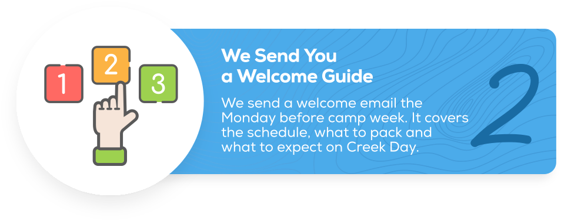

Week 1
Week 1
Wilderness Wanderings
June 1–5, 2026
Campers dive into everything that calls the forest home — trees, animals, and habitats. Plus knot tying, archery, shelter building, and traditional camp activities.
Camps for Kindergarten through 8th Grade Member early access · Feb 3, 2026
Your child doesn't need another screen. They need pine needles underfoot, creek water on their shins, and the kind of freedom that only comes from spending a week in 1,440 acres of real Georgia wilderness.
Member early access: Feb 3 · Public registration: March 3 · Spots fill fast


You wanted something more for this summer. Something that would actually matter. But screens are relentless. Schedules fill up fast. And before you know it, another summer slips by.
The real loss isn't time. It's the confidence that comes from solving real problems. The curiosity that sparks when you flip over a rock. The friendships that form around something real.
Your child was made to explore. They just need the right place to do it.
Screens, passive entertainment, and over-scheduled summers that feel busy but leave kids feeling empty and understimulated.
You know your child deserves a summer that actually builds something in them — not just a way to fill the calendar.
There's a season in every child's life when the right week outside can change how they see themselves. That season is now — and it won't last forever.
Choosing a camp is a big decision. For more than twenty years, we've been the place where kids in North Georgia discover what they're truly capable of.
Leading a hike through Chicopee Woods. Calling out a bird by its song. Wading into a creek and not wanting to get out. Kids leave Camp Elachee more confident, more curious, and more connected to the world around them.


Our naturalists don't just teach about the outdoors. They help children build a real relationship with it. Every trail hike, every creek day, every moment of discovery is designed with one goal: send your child home better than they arrived.
When a child navigates a trail, catches a frog, or figures out which plants are edible, they learn something no classroom can teach: they are capable.
We turn every rock, every stream, every bird overhead into a question worth asking. Kids leave genuinely curious about the world around them.
Something about exploring the woods together forms bonds fast. Many Camp Elachee friendships last well beyond a single summer.
Away from screens and in the middle of something real, children discover they can handle more than anyone expected — including themselves.
When children truly understand the natural world, they want to protect it. We plant those seeds early.
No algorithm feeding them the next thing. Just open land, open time, and the discovery that outside is more interesting than any screen.
They come home with stories, confidence, and muddy socks — and they can't wait to come back.
Week 1
June 1–5, 2026
Campers dive into everything that calls the forest home — trees, animals, and habitats. Plus knot tying, archery, shelter building, and traditional camp activities.
Week 2
June 8–12, 2026 (also June 29–July 3)
Get ready for lots of water fun. Campers explore Walnut Creek and discover all the critters that call the water home — one of the most popular weeks of the summer.
Week 3
June 15–19, 2026
From the tiny bumblebee to the great horned owl — if it has wings, we're watching it and learning its story.
 Week 4
Week 4
June 22–26, 2026
Blast off to faraway places. Campers explore the solar system through hands-on experiments. 3… 2… 1… launch.
Week 5
June 29–July 3, 2026
Can't get enough of the creek? This is your second chance to explore Walnut Creek and all of its aquatic wonders.
 Week 6
Week 6
July 6–10, 2026
Travel back in time — before buildings, before roads. Native peoples, dinosaurs, rocks and minerals millions of years old.
 Week 7
Week 7
July 13–17, 2026
The greatest hits are back. Favorite games, favorite activities, favorite moments. The perfect last hurrah to close out the elementary season.
July 6–10 & July 20–24
Students entering grades 4–8 can go deeper with our Specialty Camps — a more immersive, more challenging experience designed for older campers.
Interested in more than one week? Many families register for multiple sessions. Each theme is different. Each week stands on its own.
Send us a message with any questions about which weeks are right for your child.

Drop-off begins at 8:15. Campers check in with their group leader and ease into the morning with light activities and introductions. A calm, friendly start to a big day.

The heart of the day. Trail hikes, habitat exploration, hands-on science, and theme-driven activities — led by naturalist staff who treat every rock and bird like it's worth a story.
Campers eat lunch brought from home (nut-free environment), rest, and enjoy unstructured outdoor play. Real downtime. Real fun. The kind kids forget they were missing.

Archery, nature crafts, group games, wildlife encounters — or creek exploration on Thursdays and Fridays. Every afternoon ties back to the week's theme.

Groups gather to share what they discovered. Campers collect their gear and prepare for pick-up — usually already planning what they'll tell you on the drive home.

Pick-up begins at 2:45. Please plan to arrive on time so every camper gets a smooth, happy send-off — and a head full of stories.
A week designed to help girls in grades 4–8 find their footing — in the forest and in themselves. We'll practice mindfulness, explore nature-based creativity, build community, and discover what real confidence feels like when it has nothing to do with a screen or a score.
Put on your thinking cap. Campers in grades 4–8 learn real wilderness survival: how to build shelter, navigate without GPS, identify edible plants, understand fire safety, and solve problems when you can't Google the answer. Our most challenging and most unforgettable program.

Nut-free environment. Please do not pack any items containing nuts, including peanut butter. This protects all campers.
Kindergarten through 6th Grade · Ages 5–12
$255/week
Per camper, per week
Grades 4–8 · Rooted in Nature & Expedition Elachee
$350/week
Per camper, per week
Register siblings at the same time. Contact us for your discount code.
Elachee Family Adventurer Members save 10% on every registration.
Our highest discount tier saves families up to $70 per week.
Every staff member is background-checked, first aid certified, and CPR trained. We believe real adventures deserve real care. Your child is in good hands.
Low camper-to-staff ratios ensure every child is known, watched, and supported throughout the day.
All naturalists hold current First Aid and CPR certifications. Supplies are on-site and in the field at all times.
Every staff member passes a comprehensive background check before working with campers.
We work hard to accommodate campers of all ability levels. Contact us directly if your child has special needs or medical conditions so we can plan together.
First camp my twins have been to, and they absolutely loved it. Every morning they woke up excited to go see new things. The creek experience was excellent for them. We'll definitely spread the word.
My daughter has been attending Camp Elachee for three summers in a row. She went from a child who wouldn't touch a bug to confidently identifying bird calls on our family hikes. The naturalists are genuinely exceptional.
As a working parent, I needed camp hours I could count on and a program I trusted. Camp Elachee delivered on both. The weekly newsletter was a wonderful touch — I knew exactly what my son experienced every day.
My son has anxiety around new situations. I was nervous about dropping him off, but the staff were warm, prepared, and clearly experienced with kids who need a little extra reassurance. By Wednesday he didn't want to leave.
We signed our granddaughter up as a birthday gift and she still talks about Expedition Elachee months later. She built a shelter. She built a shelter. That kind of confidence is priceless.
Elementary Camp is open to children who will be at least 5 years old on or before September 1, 2026, and are entering Kindergarten through 6th grade. Specialty Camps (Rooted in Nature and Expedition Elachee) are for students entering grades 4–8.
Drop-off begins at 8:15 AM and pick-up begins at 2:45 PM, Monday through Friday. Please do not arrive before 8:15 AM. If you need to pick up early, it must be by 2:00 PM. We cannot accommodate early pick-up between 2:00–2:45 PM as this disrupts group activities. Before and after care is not available at this time.
Not at all. Camp Elachee welcomes children at every comfort level with the outdoors — from city kids who've never hiked a trail to little naturalists who can already identify a dozen bird calls. Our naturalists meet every child exactly where they are.
No swimming ability is required. Water in most areas of Chicopee Creek is no higher than ankle-deep, and all creek activities are fully supervised by staff. Campers should wear closed-toe water shoes and bring a towel, and should arrive wearing their creek clothes since there are no changing facilities on site.
Elachee Family Adventurer Members receive early access beginning February 3, 2026 at 10:00 AM. General public registration opens March 3, 2026 at 10:00 AM. Registration for each week closes when it reaches capacity or the Monday before that week begins. If a week is full, a waitlist option is available.
Yes. Elachee Family Adventurer Members receive a 10% discount on all registrations. Discovery Plus Members receive 20%. Families registering multiple children at the same time receive a 5% sibling discount. Use the contact form on our website to request your sibling discount code. Discounts cannot be combined.
Refunds are available until the cancellation deadline (please confirm the current date with the Camp Director as dates vary year to year). After the deadline, refunds require a doctor's note. Week transfers are permitted as space allows. Requests must be made at least 10 business days before the start of the new camp week.
Unfortunately we are not able to accommodate friend group requests. Our groupings are based on age and grade to maintain appropriate staffing structures and activity levels. However, campers who are close in age are often in the same group or participate in joint activities throughout the day.
Campers should bring: a labeled water bottle, lunch packed in a single lunchbox they can carry independently, at least 2 snacks, and an optional hat. Elachee provides sunscreen and bug spray. If your child has specific needs, contact the Camp Director directly. Storage is limited, so pack light.
Yes. Camp Elachee is a nut-free environment to protect the safety of all campers. Please do not pack any food items that contain nuts, including peanut butter, nut-based granola bars, or trail mix with nuts. If you have questions about specific foods, contact the Camp Director.
We work hard to make our camp atmosphere as inclusive as possible. If your child has special needs, a medical condition, or requires specific accommodations, please reach out through our contact page before registering so we can discuss options together.
Yes. You'll receive a weekly camp newsletter via email on the Monday of your child's camp week. The newsletter includes highlights of what's planned, helpful reminders (especially for Creek Day), and information to help you connect with your camper about their experiences.
Our staff are trained to recognize and respond to children who are having a hard time. We have protocols for homesickness, anxiety, and conflict between campers. If your child is experiencing ongoing difficulty, a staff member will contact you. We are good at turning a tough start into a great week.
We are not hosting a Junior CIT or CIT program for the 2026 season. Older campers who have aged out of elementary programming should check out our Specialty Camps. Rooted in Nature and Expedition Elachee are designed specifically for grades 4–8.
Camp Elachee takes place at the Elachee Nature Science Center, located at 2125 Elachee Drive, Gainesville, GA 30504, within the 1,440-acre Chicopee Woods Nature Preserve. For directions, visit elachee.org or call 770-535-1976.
Still have a question? Send Us a Message
February 3, 2026 · 10:00 AM
March 3, 2026 · 10:00 AM
Early June – Mid-July 2026
Five quick steps. Most families finish in about five minutes — then you're booked and we take it from there.
Quick family signup on Campsite — about two minutes.
Browse themes, add multiple sessions, or join a waitlist.
Age, grade, medical notes, and emergency contacts.
Campsite's secure checkout — confirmation email sent instantly.
Packing list, schedule, and Creek Day reminders — Monday before camp.
Spots fill up every summer. The week you want won't wait. Give your child a summer they'll actually remember.
Want early access and up to 20% off? Become an Elachee member before March 3rd.